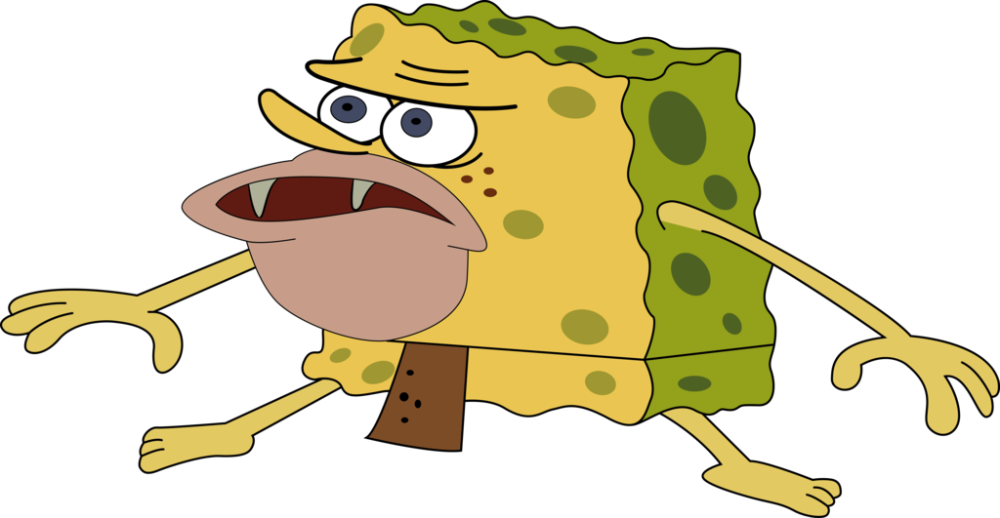

Zaman prasejarah awal dikenal sebagai Zaman Batu, ditandai oleh penggunaan alat-alat batu, tulang hewan, serta praktek penguburan. Pada periode 16 sampai 5 SM, perkembangan logam seperti besi, tembaga, dan perak membawa kemajuan teknologi. Ini menjadi pondasi untuk lahirnya filsafat pada abad ke-6 SM, dengan faktor-faktor yang mempengaruhi pemikiran manusia.